One of the challenges in predictive modeling occurs when the dependent variable is imbalanced (i.e. the ratio of one class to the other is high, generally greater than 80-to-20). Several strategies have been proposed to address the imbalance including upsampling and downsampling. Upsampling involves duplicating data from the smaller class to better match the number of observations from the larger class. The disadvantage of upsampling is that new data is being created that could potentially cause overfitting. Additionally, by artificially increasing the sample size standard errors will also be artificially decreased. Downsampling involves randomly selecting from the larger class to achieve better balance. The disadvantage of downsampling is that some data, and sometimes a lot of data, is excluded from the model.
This paper introduces a procedure that downsamples while using all available data by training multiple models. For example, consider a dataset with 1,000 observations, 900 are of class A and 100 are of class B. Assuming we wish to have perfect balance between A and B, we would randomly assign the 900 class A observations to one of nine models. We can then pool the predictions across the nine models.
Working Example
The Programme of
International Student Assessment (PISA) is international study
conducted by the Organisation for
Economic Co-operation and Development (OECD) every three years. It
assesses 15-year-old students in mathematics, science, and reading while
collecting information about the students and their schools. The
pisa dataset included in the medley package
comes from the 2009 administration and is used to demonstrate predicting
private versus public school attendance. There are 5,233 observations
across 44 variables with 93.4% public school students and 6.6% private
school students.
To begin, we will split the data into a training and validation set
using the splitstackshape::stratified()
function to ensure that the ratio of public-to-private school students
is the same in both datasets.
pisa_formu <- Public ~ .
names(pisa) <- pisa_variables[names(pisa)]
pisa_splits <- splitstackshape::stratified(
pisa, group = "Public", size = 0.75, bothSets = TRUE)
pisa_train <- pisa_splits[[1]] |> as.data.frame()
pisa_valid <- pisa_splits[[2]] |> as.data.frame()
table(pisa$Public, useNA = 'ifany') |> print() |> prop.table()
#>
#> FALSE TRUE
#> 345 4888
#>
#> FALSE TRUE
#> 0.06592777 0.93407223
table(pisa_train$Public, useNA = 'ifany') |> print() |> prop.table()
#>
#> FALSE TRUE
#> 259 3666
#>
#> FALSE TRUE
#> 0.06598726 0.93401274
table(pisa_valid$Public, useNA = 'ifany') |> print() |> prop.table()
#>
#> FALSE TRUE
#> 86 1222
#>
#> FALSE TRUE
#> 0.06574924 0.93425076We can estimate a logistic regression model and get the predicted probabilities for the validation dataset.
pisa_lr_out <- glm(pisa_formu, data = pisa_train, family = binomial(link = 'logit'))
pisa_predictions <- predict(pisa_lr_out, newdata = pisa_valid, type = 'response')The figure below shows the distribution of predicted probabilities for the validation dataset. There is some separation between public and private school students, but the densities are clearly centered to the right side of the range.
ggplot(data.frame(Public = pisa_valid$Public,
Prediction = pisa_predictions),
aes(x = Prediction, color = Public)) +
geom_density()
The figure below provides a receiver operator characteristic (ROC) curve along with a plot of the accuracy, sensitivity, and specificity.
calculate_roc(predictions = pisa_predictions,
observed = pisa_valid$Public) |> plot()
The confusion matrix below, splitting at 0.5, indicates that this model is no better than the null model (i.e percent public school students is 93.4%). Of course we could adjust that cut value to optimize either the specificity or sensitivity.
confusion_matrix(observed = pisa_valid$Public,
predicted = pisa_predictions > 0.5)
#> predicted
#> observed FALSE TRUE
#> FALSE 1 (0.08%) 85 (6.50%)
#> TRUE 4 (0.31%) 1218 (93.12%)
#> Accuracy: 93.2%
#> Sensitivity: 1.16%
#> Specificity: 99.67%Shrinking Fitted Values
It turns out that the range of fitted values from logistic regression will shrink as the amount of imbalance in the dependent variable increases. I first encountered this issue when estimating propensity scores for my dissertation in a study of charter versus traditional public school students. In that study using the National Assessment of Educational Progress (NAEP) approximately 3% of students attended a charter school. In that study, the range of propensity scores were severely constrained. To explore why, the multilevel::psrange() function was developed The result of this function is the figure below. Starting at the bottom, 345 public school students were randomly selected so that the logistic regression could be estimated where there is perfect balance in the dependent variable. As we move up we increase the ratio from 1:1 to 1:13. For each ratio, 20 random samples are drawn, logistic regression model estimated, and the minimum and maximum fitted values (i.e. predicted probabilities) are recorded (they are represented by the black dots and green bars). The distributions across all models are also included.

Plotting just the ranges along with the mean of the fitted values for public (blue) and private (green) school students shows that once the ratio is greater than 3-to-1 the mean of the fitted values for the zero class (private schools in this example) is greater than 0.5.

Downsampling
As discussed above one of the key disadvantages of downsampling is
that in situations where there is significant imbalance we are excluding
a lot of data from analysis. The downsample() function will
first determine how many models need to be estimated such that each
observation from the larger class is used exactly once. For this example
we are using a public-to-private student ratio of 2-to-1 so that for
each model estimated there are 259 private and 518 public student
observations. Given there are 3925 observations in our training set, the
dowmsample() function will estimate 7 models.
pisa_ds_out <- downsample(
formu = pisa_formu,
data = pisa_train,
model_fun = glm,
ratio = 2,
family = binomial(link = 'logit'))
length(pisa_ds_out)
#> [1] 7We can use the predict() function to get a data frame of
predictions. Each column corresponds to the predicted value for each of
the 7 models.
pisa_predictions_ds <- predict(pisa_ds_out,
newdata = pisa_valid,
type = 'response')
head(pisa_predictions_ds)
#> model1 model2 model3 model4 model5 model6 model7
#> 1 0.8511828 0.7437341 0.8921605 0.8424369 0.7347052 0.8697531 0.6928875
#> 2 0.7393116 0.6822714 0.9466815 0.7959953 0.8118642 0.9441840 0.9580830
#> 3 0.4944206 0.3813138 0.5575741 0.3586561 0.5023435 0.5805062 0.6281852
#> 4 0.8525691 0.8268514 0.8293386 0.8372777 0.9464037 0.8843848 0.9016058
#> 5 0.1823382 0.3670335 0.4556063 0.1408078 0.1899378 0.3578418 0.2657968
#> 6 0.9216160 0.8192096 0.9040353 0.9213184 0.8080822 0.9076342 0.8768295We can average the predictions to get a single vector.
pisa_predictions_ds2 <- pisa_predictions_ds |> apply(1, mean)The density distributions are provided below. These distributions are more like the distributions we expect when we have balanced data even though we did use all the observations to get these predicted probabilities.
ggplot(data.frame(Public = pisa_valid$Public,
Prediction = pisa_predictions_ds2),
aes(x = Prediction, color = Public)) +
geom_density()
Although the downsample() function appears to address
the issue of shrinking and off centered fitted values, the model
performance metrics provided below suggest that it did not improve the
overall performance of the model predictions.
roc <- calculate_roc(predictions = pisa_predictions_ds2,
observed = pisa_valid$Public)
plot(roc)
confusion_matrix(observed = pisa_valid$Public,
predicted = pisa_predictions_ds2 > 0.5)
#> predicted
#> observed FALSE TRUE
#> FALSE 45 (3.44%) 41 (3.13%)
#> TRUE 204 (15.60%) 1018 (77.83%)
#> Accuracy: 81.27%
#> Sensitivity: 52.33%
#> Specificity: 83.31%Appendix A: Model Summaries
Above we averaged the predicted values across all the models to get a
single prediction for each observation in our validation dataset.
However, it is possible to pool models using the mice::pool()
function to get a single set of regression coefficients. The table below
provides the pooled regression coefficients from the
downsample function along with the coefficients from the
logistic regression model using all the data.
| Pooled from downsamples | Complete data | |
|---|---|---|
| (Intercept) | 5.516 * (2.376) | 7.862 *** (1.657) |
| SexMale | -0.823 ** (0.244) | -0.762 *** (0.149) |
| `Attend <ISCED 0>`Yes, one year or less | 0.495 (0.286) | 0.498 ** (0.190) |
| `Age at <ISCED 1>` | 0.087 (0.186) | 0.075 (0.104) |
| `Repeat <ISCED 1>`Yes, once | 0.693 (0.548) | 0.645 (0.345) |
| `At Home - Mother`TRUE | -0.888 (0.843) | -0.921 (0.493) |
| `At Home - Father`TRUE | -0.672 (0.414) | -0.620 * (0.277) |
| `At Home - Brothers`TRUE | 0.184 (0.313) | 0.155 (0.146) |
| `At Home - Sisters`TRUE | 0.563 * (0.237) | 0.454 ** (0.146) |
| `At Home - Grandparents`TRUE | -0.725 * (0.328) | -0.648 ** (0.201) |
| `At Home - Others`TRUE | -0.094 (0.332) | -0.136 (0.221) |
| `Mother <Highest Schooling>`<ISCED level 3A> | 0.101 (0.631) | 0.070 (0.388) |
| `Mother Current Job Status`Other | -0.457 (0.609) | -0.303 (0.364) |
| `Mother Current Job Status`Working Full-time | -0.608 (0.537) | -0.443 (0.339) |
| `Mother Current Job Status`Working Part-Time | -0.586 (0.650) | -0.446 (0.369) |
| `Father <Highest Schooling>`<ISCED level 2> | 0.072 (1.219) | 0.077 (0.832) |
| `Father <Highest Schooling>`<ISCED level 3A> | -0.579 (1.121) | -0.658 (0.754) |
| `Father Current Job Status`Other | -0.019 (0.737) | -0.065 (0.394) |
| `Father Current Job Status`Working Full-time | 0.356 (0.604) | 0.236 (0.324) |
| `Father Current Job Status`Working Part-Time | 1.260 (0.892) | 0.998 (0.529) |
| `Language at home`Language of test | 0.137 (0.489) | -0.104 (0.263) |
| `Possessions desk`TRUE | -0.583 (0.404) | -0.531 * (0.265) |
| `Possessions own room`TRUE | 0.521 (0.384) | 0.600 * (0.238) |
| `Possessions study place`TRUE | -0.056 (0.488) | -0.223 (0.303) |
| `Possessions computer`TRUE | -0.077 (0.855) | -0.038 (0.592) |
| `Possessions software`TRUE | 0.365 (0.332) | 0.358 * (0.161) |
| `Possessions Internet`TRUE | -1.416 (0.917) | -1.177 (0.602) |
| `Possessions literature`TRUE | -0.619 * (0.295) | -0.551 ** (0.175) |
| `Possessions poetry`TRUE | -0.369 (0.308) | -0.250 (0.176) |
| `Possessions art`TRUE | -0.402 (0.333) | -0.273 (0.196) |
| `Possessions textbooks`TRUE | -0.021 (0.356) | -0.007 (0.214) |
| `Possessions dictionary`TRUE | 0.100 (0.583) | -0.000 (0.422) |
| `Possessions dishwasher`TRUE | -0.074 (0.336) | -0.078 (0.234) |
| `How many cellular phones`Three or more | -0.851 (0.987) | -0.906 (0.741) |
| `How many cellular phones`Two | -0.192 (0.985) | -0.478 (0.771) |
| `How many televisions`Three or more | 1.378 * (0.645) | 0.995 *** (0.302) |
| `How many televisions`Two | 0.816 (0.640) | 0.519 (0.324) |
| `How many computers`One | 0.589 (1.188) | 0.343 (0.823) |
| `How many computers`Three or more | 0.174 (1.168) | -0.072 (0.838) |
| `How many computers`Two | 0.079 (1.143) | -0.120 (0.832) |
| `How many cars`Three or more | 0.038 (0.458) | -0.041 (0.295) |
| `How many cars`Two | -0.223 (0.427) | -0.264 (0.291) |
| `How many rooms bath or shower`Three or more | -1.001 * (0.427) | -0.703 ** (0.238) |
| `How many rooms bath or shower`Two | -0.223 (0.371) | -0.107 (0.217) |
| `How many books at home`101-200 books | -0.255 (0.440) | -0.367 (0.327) |
| `How many books at home`11-25 books | -0.158 (0.431) | -0.158 (0.339) |
| `How many books at home`201-500 books | -0.998 * (0.477) | -0.985 ** (0.334) |
| `How many books at home`26-100 books | -0.498 (0.395) | -0.489 (0.302) |
| `How many books at home`More than 500 books | -1.082 (0.558) | -1.042 ** (0.366) |
| `Reading Enjoyment Time`30 minutes or less a day | -0.071 (0.477) | -0.183 (0.251) |
| `Reading Enjoyment Time`Between 30 and 60 minutes | 0.494 (0.457) | 0.311 (0.283) |
| `Reading Enjoyment Time`I don't read for enjoyment | -0.019 (0.466) | -0.118 (0.259) |
| `Reading Enjoyment Time`More than 2 hours a day | 0.245 (0.747) | 0.208 (0.406) |
| `<Enrich> in <test lang>`TRUE | -0.012 (0.671) | 0.242 (0.413) |
| `<Enrich> in <mathematics>`TRUE | -0.236 (0.569) | -0.276 (0.323) |
| `<Enrich> in <science>`TRUE | 0.576 (0.634) | 0.367 (0.410) |
| `<Remedial> in <test lang>`TRUE | 0.311 (0.964) | 0.041 (0.524) |
| `<Remedial> in <mathematics>`TRUE | -0.511 (0.685) | -0.614 (0.384) |
| `<Remedial> in <science>`TRUE | -0.197 (0.789) | 0.245 (0.496) |
| `Out of school lessons <test lang>`Do not attend | -0.279 (0.815) | -0.106 (0.493) |
| `Out of school lessons <test lang>`Less than 2 hours a week | -0.685 (0.712) | -0.533 (0.465) |
| `Out of school lessons <maths>`4 up to 6 hours per week | 0.237 (0.902) | 0.386 (0.541) |
| `Out of school lessons <maths>`Do not attend | -0.254 (0.798) | -0.160 (0.410) |
| `Out of school lessons <maths>`Less than 2 hours a week | -0.117 (0.618) | 0.122 (0.369) |
| `Out of school lessons <science>`4 up to 6 hours per week | -1.091 (0.789) | -0.837 (0.549) |
| `Out of school lessons <science>`Do not attend | -0.565 (0.717) | -0.456 (0.472) |
| `Out of school lessons <science>`Less than 2 hours a week | -0.534 (0.751) | -0.513 (0.464) |
| n | 783 | 3925.000 |
| *** p < 0.001; ** p < 0.01; * p < 0.05. | ||
Appendix B: Random Forest
The downsample() function can use nearly any modeling
function available in R. In this appendix we show how to use random
forest. In order to use classification with randomForest()
we must convert our dependent varaible to a factor.
library(randomForest)
data('pisa', package = 'medley')
data('pisa_variables', package = 'medley')
pisa$Public <- factor(pisa$Public)
pisa_splits <- splitstackshape::stratified(
pisa, group = "Public", size = 0.75, bothSets = TRUE)
pisa_train <- pisa_splits[[1]] |> as.data.frame()
pisa_valid <- pisa_splits[[2]] |> as.data.frame()Setting model_fun = randomForest will estimate random
forest models for each of the models.
pisa_ds_out_rf <- downsample(
formu = pisa_formu,
data = pisa_train,
model_fun = randomForest,
ratio = 2)
length(pisa_ds_out_rf)
#> [1] 7
pisa_predictions_ds_rf <- predict(pisa_ds_out_rf,
newdata = pisa_valid,
type = 'response')
head(pisa_predictions_ds_rf)
#> model1 model2 model3 model4 model5 model6 model7
#> 1 TRUE TRUE TRUE TRUE TRUE TRUE TRUE
#> 2 FALSE TRUE TRUE TRUE TRUE TRUE TRUE
#> 3 TRUE TRUE FALSE TRUE TRUE TRUE TRUE
#> 4 FALSE TRUE FALSE FALSE FALSE FALSE TRUE
#> 5 TRUE TRUE TRUE TRUE TRUE TRUE TRUE
#> 6 FALSE FALSE TRUE FALSE FALSE FALSE FALSERandom forest returns the predicted class when
type = 'response'. There are several ways we can handle
this. Here we use a simple voting strategy.
pisa_predictions_ds_rf_vote <- apply(
pisa_predictions_ds_rf, 1,
FUN = function(x) { mean(as.logical(x)) > 0.5})
confusion_matrix(observed = pisa_valid$Public,
predicted = pisa_predictions_ds_rf_vote)
#> predicted
#> observed FALSE TRUE
#> FALSE 37 (2.83%) 49 (3.75%)
#> TRUE 143 (10.93%) 1079 (82.49%)
#> Accuracy: 85.32%
#> Sensitivity: 43.02%
#> Specificity: 88.3%